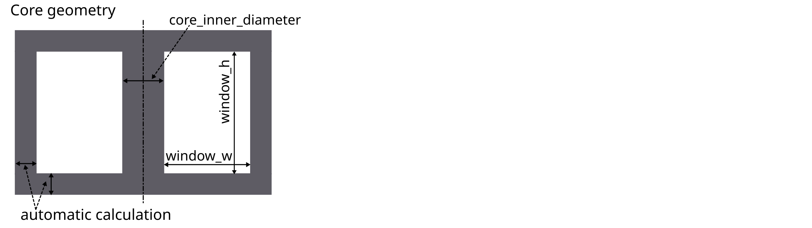
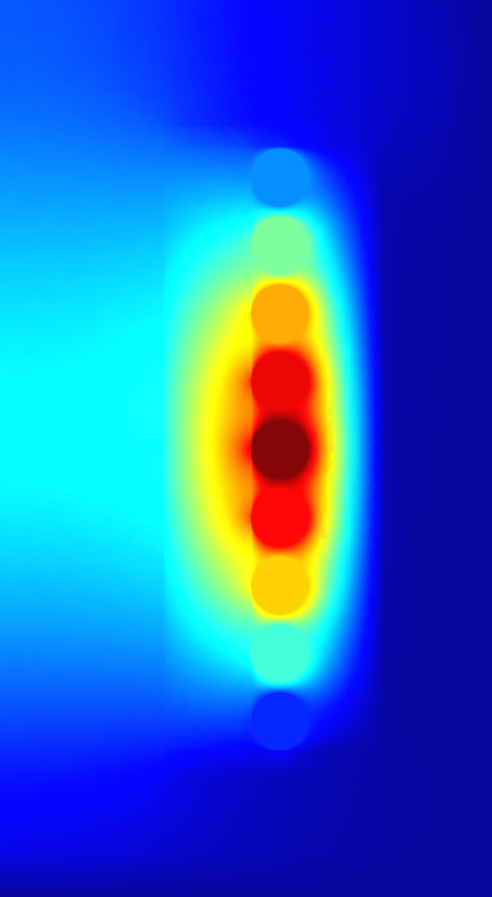

1 FEM Magnetics Toolbox (FEMMT)
Python toolbox to generate preconfigured figures for FEM simulation tools in power electronics.
The toolbox contains two parts, a reluctance module and a FEM module.
The reluctance module is for pre-calculations
The FEM module is for detailed calculations
1.1 Installation
To run FEMMT, python (version 3.8 or above) and onelab is needed.
1.1.1 ONELAB installation
Go to https://onelab.info/
Download the Desktop Version for your OS (Windows, Linux or macOS)
Unpack the software and remember the file path. This will be needed later when installing FEMMT.
1.1.2 Install FEMMT
FEMMT can be installed using the python pip package manager. Either a release version can be installed using pip or a developement version by downloading this repository.
1.1.2.1 FEMMT release version (recommended)
This installs the stable release version.
pip install femmt
1.1.2.2 FEMMT development version (for developers only)
This is the latest development version with the latest features. Note: You may need to install git. Also have a look at the developers notes.
cd /Documents/Folder/of/Interest/FEMMT
git clone git@github.com:upb-lea/FEM_Magnetics_Toolbox.git
pip install -e .
FEMMT is using the material database. To use the latest version for developing, also install the material database in developer mode.
cd /Documents/Folder/of/Interest/materialdatabase
git clone git@github.com:upb-lea/materialdatabase.git
pip install -e .
1.2 Examples
This toolbox is able to build a complete FEM simulation from simple
Python code. The following figure shows the Python code on the left and
the corresponding FEM simulation on the right. 
Code examples can be found in this example file. This file is updated regulary.
1.2.1 Basics
The magnetic component can be an inductor, a transformer, or a transformer with integrated stray path. The parameterization process is divided into the following steps:
Chose simulation type,
set core parameters (geometry, material),
set air gap parameters (position, height),
set conductor parameters (litz/solid wire),
start simulation with given frequencies and currents and phases.
Please have a look at the basic_example.
The examples contain among other things:
Geometries: Coil, transformer, transformer with integrated stray path,
wire and stranded wire definition,
air gaps definition,
excitation with different frequencies, amplitudes and phases.
The simulation results can be found in working_directory/results/result_log_electro_magnetic.json. Working directory can either be set by the user otherwise it located at /python-side-packages-path/femmt. In it you can find
power loss in the core: hysteresis losses and eddy current losses,
losses per winding and for each individual winding,
self- and mutual inductances.
For a more detailed guide on how to create a model, plase have a look here.
1.2.2 Counting arrow system
Defined as depicted here:

1.3 GUI (Experimental)
There is a first preview for a GUI. Installing this is a bit cumbersome at first, but will be simplified in the future:
Download the complete repository via
Code->Download ZIPand unpack it.install the development version of femmt as described above
run python
downloads/path-to_femmt/femmt/gui/femmt_gui.py
Please note, the GUI is experimental.

1.4 FEMM Validation (for developers only)
For verification purposes a FEMM model can be created in FEMMT. To do this FEMM needs to be installed as well as the FEMM python package. The functionality is limited, e.g. the air gaps are limited to the ‘center’-type. Other types, like ‘percent’ are not implemented.
2 User Guide: How to create a FEMMT model
This guide explains how a model can be created in femmt and provides all the necessary information to work with femmt. Many examples for femmt models can be found in the example folder.
2.1 Working directory
Every femmt model has a working directory which can be set when creating an instance of the femmt base class called ‘MagneticComponent’. When running the simulation many files will be created in the working directory including the model, mesh and multiple result files. It also contains the electro_magnetic_log.json which the most important simulation results (e.g. losses, inductance, …).
Besides the working directory a MagneticComponent also needs a ComponentType. Currently this can be ‘Inductor’, ‘Transformer’ or ‘IntegratedTransformer’.
This results to the following code:
import femmt as fmt
geo = fmt.MagneticComponent(component_type=fmt.ComponentType.Inductor, working_directory=working_directory, silent=False)
Note about the silent-flag. In case of False, all outputs are printed in the terminal. In case of True, no command line outputs are shown. This simple feature significantly speeds up simulation time, especially for many automated simulations.
2.2 Creating a core
In general, only 2D rotationally symmetric geometries are represented in FEMMT. Other core shapes must first be converted to a 2D rotationally symmetric shape. The corresponding values for this (diameter core, dimensions of the winding window) are taken from the data sheet. Afterwards, a corresponding geometry is generated automatically.
The following graphics always show only a sectional view of the core geometry.

After creating a MagneticComponent a core needs to be created. The core needs spatial parameters as well as material parameters. The neccessary spatial parameters are shown in the image below.
Core spatial parameters can be entered manually but FEMMT provides a database of different practical cores. This database can be accessed using:
core_db = fmt.core-database()["PQ 40/40"]
Now the core object can be created and added to the model (geo object)
core = fmt.Core(core_inner_diameter=core_db["core_inner_diameter"], window_w=core_db["window_w"], window_h=core_db["window_h"], material="N95", temperature=25, frequency=100000, datasource="manufacturer_datasheet")
core.set_core(core)
2.2.1 Material database
The material database was already introduced in the upper code example with the material= parameter. The temperature as well as the frequency are necessary to pick the corresponding data from the datasheet.
2.3 Adding air gaps to the core
In the next steps air gaps can be added. Currently it is only possible to add air gaps in the center leg, there for the ‘AirGapLegPosition’ is always ‘CenterLeg’. To set the vertical position for a air gap multiple methods are available:
Center: The air gap will always be positioned in the center
Percent: A value between 0 and 100 can be given. Where 0 represents the bottom end and 100 the top end of the winding window.
Manually: The specific y coordinate nneeds to be entered manually.
Have a look at the following example on how to create an air gap object and add it to the model:
air_gaps = fmt.AirGaps(method=fmt.AirGapMethod.Percent, core=core)
air_gaps.add_air_gap(leg_position=fmt.AirGapLegPosition.CenterLeg, height=0.0005, position_value=50)
geo.set_air_gaps(air_gaps)
Adding an air_gap object is not necessary. If no air gap is needed, don’t add the air gap object to the model.
2.4 Set insulation distances
There are multiple insulations implemented in femmt. Some of them are created as rectangles in the model, some are just adding an offset to the windings.
Core insulations are the insulations which are created as rectangles in the model. 4 core insulations will be added: top, left, bottom, right. The distance of those values can be set with the ‘add_core_insulations’ function.
Furthermore there are offset insulations between each turn in the same winding, a distance between 2 windings in one virtual winding window and a distance between each virtual winding window. The first two are set using the ‘add_winding_insulations’ functions, the last one when creating such a virtual winding window (vww).
The function ‘add_winding_insulations’ therefore needs multiple parameters:
The first parameter is a list called inner_windings, where the list index corresponds to the number of the winding (0: Primary, 1: Secondary, …).
The second parameter is the distance between two virtual winding windows, this is called virtual_winding_window_insulation.
This is how to create an insulation object and add certain insulations:
insulation = fmt.Insulation()
insulation.add_core_insulation(0.001, 0.001, 0.004, 0.001)
insulation.add_winding_insulation([0.0005], 0.0001)
geo.set_insulation(insulation)
The spatial parameters for the insulation, as well as for every other function in FEMMT, are always in SI-Units, in this case metres.
2.5 Add windings to the winding window
In order to understand the way winding windows work in femmt, the concept of virtual winding windows must be explained:
2.5.1 Virtual Winding Windows
For every femmt model there is always one winding window, which is a 2D representation of the 3D rotated winding window. This winding window can be split into multiple virtual winding windows which are used to draw the conductors. There are multiple ways to split a winding window:
NoSplit: Only 1 virtual winding window will be returned and it has the same size as the real winding window.
HorizontalSplit: 2 virtual winding windows will be returned, one for the top and one for the bottom part. The height of the splitting line can be set using a horizontal_split_factor (value between 0 and 1)
VerticalSplit: 2 virtual winding windows will be returned, one for the left and one for the right part. The radius (x-coordinate) of the splitting line can be set using a vertical_split_factor (value between 0 and 1)
HorizontalAndVerticalSplit: 4 virtual winding windows are returned. One for each corner (in the following order): top_left, top_right, bottom_left, bottom_right. In this case the horizontal and vertical split factors can be used to set the sizes of each grid cell.
In addition to that 2 virtual winding windows can be combined to one (this is not possible for (top_left, bottom_right) or (top_right, bottom_left) combinations). This is done using the combine_vww() function of the WindingWindow class.
Each virtual winding window can be filled with either one single winding or one interleaved winding.
A winding window with only one virtual winding window can be craeted like this:
winding_window = fmt.WindingWindow(core, insulation)
vww = winding_window.split_window(fmt.WindingWindowSplit.NoSplit)
2.5.2 Winding types and winding schemes
The following table gives an overview of the different winding types, winding schemes and conductor arrangements:
WindingType |
ConductorType |
WindingScheme |
ConductorArrangement |
WrapParaType |
status |
description |
|---|---|---|---|---|---|---|
Interleaved |
Always needs 2 conductors |
|||||
RoundSolid, RoundLitz |
||||||
Bifilar |
not implemented |
TODO |
||||
VerticalAlternating |
not implemented |
primary and secondary winding are interleaved vertically (rows) |
||||
HorizontalAlternating |
implemented |
primary and secondary winding are interleaved horizontally (cols) |
||||
VerticalStacked |
implemented |
primary winding is drawn bottom to top, seoncdary winmding is drawn top to bottom |
||||
Square |
“ |
|||||
Hexagonal |
“ |
|||||
RectangularSolid |
not implemented |
|||||
Single |
Always needs 1 conductor |
|||||
RoundSolid, RoundLitz |
||||||
None |
implemented |
|||||
Square |
“ |
|||||
Square full width |
“ |
|||||
Hexagonal |
“ |
|||||
RectangularSolid |
||||||
Full |
implemented |
whole virtual winding window contains is filled with one turn |
||||
FoilHorizontal (stacked) |
implemented |
foils are very long (x-axis) and drawn along y-axis |
||||
Square full width |
not implemented |
foils are drawn along x-axis first and then along y-axis |
||||
FoilVertical |
implemented |
foils are very tall (y-axis) and drawn along x-axis |
||||
Fixed Thickness |
“ |
|||||
Interpolate |
“ |
2.5.2.1 ConductorArrangement
Square: conductors are set in next to each other in a grid
Hexagonal: similar to square but in this case the conductors frpmo the next column slips in the free space between two conductors from the first column
Square full width: conducors are first drawn along x-axis and then y-axis
2.5.2.2 WrapParaType
Fixed thickness: TODO
Interpolate: TODO
Images for the possible winding types can be found here.
2.6 Add conductors
When creating an instance of the class Conductor a winding number and a conductivity needs to be given:
The winding number represents the index of the winding (e.g. primary->1, secondary->2, tertiary->3). As an example: When starting a simulation on a transformer a current needs to be given, this is done in a list. The first index of the current’s list will be set to the winding with the lowest winding number, the second index of the list to the winding with the second lowest winding number and so on.
The conductivity can be set using the Conductivity enum where one of two possible materials need to be selected:
Copper
Aluminium
After creating an conductor object it is necessary to add a conductor to it. As already shown in the winding types table 3 different conducors can be set:
RoundSolid
RoundLitz
RectangularSolid
To create a conductor have a look at the following code example:
winding1 = fmt.Conductor(winding_number=0, conductivity=fmt.Conductivity.Copper)
winding1.set_solid_round_conductor(conductor_radius=0.0011, conductor_arrangement=fmt.ConductorArrangement.Square)
2.6.1 Add conductors to virtual winding windows
Now the conductors need to be added to the virtual winding windows with the corresponding winding type and winding scheme. In this case the set_winding() or set_interleaved_winding() function needs to be called. In the set_interleaved_winding() function an insulation distance can also be set. This value represents the distance between conductors from the primary and secondary side.
vww.set_winding(conductor=winding1, turns=9, winding_scheme=None)
If you have a look at the winding types and windng schemes table a winding scheme is not needed when creating a round solid conductor in single winding. Therefore the value is set to None.
Now before simulating the winding window needs to be added to the model as well:
geo.set_winding_window(winding_window=winding_window)
2.7 Create model and start simulation
After every needed component is added to the model the model can be created. This is done using the create_model() function. The frequency is needed there because of the mesh which is adapted according to the skin depth. In addition to that a boolean can be given to show the model after creation (in gmsh).
The last step is to run a simulation using single_simulation(), which needs the frequency, currents (and phase if transformer is set) as parameters.
geo.create_model(freq=100000, visualize_before=True, save_png=False)
geo.single_simulation(freq=100000, current=[4.5], show_results=True)
The results should look like this:
2.8 [Optional] Create thermal simulation
After running the electromagnetic simulation it is possible to use the simulation results and the created model and start a thermal simulation. The thermal simulation will add a case surrounding the previous created model. At the edge of this case the boundary condition is applied and the thermal conductivity as well as the dimensions of the case can be choosen freely. This case is split into 5 parts: top, top right, right, bot right, bot. For each region a different thermal conductivity and boundary condition can be set. In order to run thermal a thermal simulation different values are needed:
thermal conductivity dict: A dictionary containing thermal conductivities for each region. The regions are: air, core, winding, air_gaps, insulation, case (which is split in top, top_right, right, bot_right, bot
case gap values: Set the size of the surrounding case
boundary temperatures dict: The temperatures which will be applied at the edge of the case (dirichlet boundary condition)
boundary flags: By disabling a specific boundary its condition can be set to a neumann boundary condition ignoring the temperature parameter
Have a look at this example on how to set the parameters since the dictionary keywords are important to write correctly:
thermal_conductivity_dict = {
"air": 0.0263,
"case": {
"top": 0.122,
"top_right": 0.122,
"right": 0.122,
"bot_right": 0.122,
"bot": 0.122
},
"core": 5,
"winding": 400,
"air_gaps": 180,
"insulation": 0.42
}
case_gap_top = 0.002
case_gap_right = 0.0025
case_gap_bot = 0.002
boundary_temperatures = {
"value_boundary_top": 20,
"value_boundary_top_right": 20,
"value_boundary_right_top": 20,
"value_boundary_right": 20,
"value_boundary_right_bottom": 20,
"value_boundary_bottom_right": 20,
"value_boundary_bottom": 20
}
boundary_flags = {
"flag_boundary_top": 0,
"flag_boundary_top_right": 0,
"flag_boundary_right_top": 1,
"flag_boundary_right": 1,
"flag_boundary_right_bottom": 1,
"flag_boundary_bottom_right": 1,
"flag_boundary_bottom": 1
}
In the boundary_flags dictionary 2 flags are set to 0 which means there will be a neumann boundary applied. Please have a look at the picture above which shows the current selected boundaries.
In the following table a possible set of thermal conductivities can be found:
Material |
Thermal conductivity |
air (background) |
0.0263 |
epoxy resign (used in case) |
1.54 |
ferrite (core) |
5 |
copper (winding) |
400 |
aluminiumnitride (air gaps) |
180 |
polyethylen (insulation) |
0.42 |
The thermal simulation will solve the stationary heat equation and since no convection is considered every material is assumed to be solid. Now the simulation can be run:
geo.thermal_simulation(thermal_conductivity_dict, boundary_temperatures, boundary_flags, case_gap_top, case_gap_right, case_gap_bot, True, True)
The following image shows the simulation results:
3 Winding types
Single_Square |
Single Hexagonal |
Single Full |
|
|
|
Single_SquareFullWidth |
Single FoilHorizontal |
Single FoilVertical (fixed thickness) |
|
|
|
Single FoilVertical (interpolate) |
Interleaved HorizontalAlternating |
Interleaved VerticalStacked (square) |
Interleaved VerticalStacked (hexagonal) |
||
|


{kind=link}
{kind=link}
{kind=link}
{kind=link}
{kind=link}
{kind=link}
{kind=link}
{kind=link}
{kind=link}
{kind=link}
4 FEMMT class and function documentation
4.1 The MagneticComponent class
- class femmt.MagneticComponent.MagneticComponent(component_type: ComponentType = ComponentType.Inductor, working_directory: str = None, silent: bool = False, is_gui: bool = False)
A MagneticComponent is the main object for all simulation purposes in femmt.
One or more “MagneticComponents” can be created
Each “MagneticComponent” owns its own instance variable values
- __init__(component_type: ComponentType = ComponentType.Inductor, working_directory: str = None, silent: bool = False, is_gui: bool = False)
- Parameters:
component_type (ComponentType) – Available options: - “inductor” - “transformer” - “integrated_transformer” (Transformer with included stray-path)
working_directory (string) – Sets the working directory
silent (bool) – True to reduce onelab simulation outputs in command line. False to see full command line output.
is_gui (bool) – Asks at first startup for onelab-path. Distinction between GUI and command line. Defaults to ‘False’ in command-line-mode.
- create_model(freq: float, skin_mesh_factor: float = 0.5, visualize_before: bool = False, save_png: bool = False, color_scheme: Dict = ff.colors_femmt_default, colors_geometry: Dict = ff.colors_geometry_femmt_default)
Create a model from the abstract geometry description inside onelab including optional mesh generation
- Parameters:
freq (float) – Frequency [Hz]
skin_mesh_factor (float) – [default to 0.5]
visualize_before (bool) – True for a pre-visualisation (e.g. check your geometry) and after this a simulation runs, False for a direct simulation
save_png (bool) – True to save a png-figure, false for no figure
color_scheme (Dict) – colorfile (definition for red, green, blue, …)
colors_geometry (Dict) – definition for e.g. core is grey, winding is orange, …
- Param:
do_meshing: [default to True], internal use only (e.g. for GUI)
- excitation_sweep(frequency_list: List, current_list_list: List, phi_deg_list_list: List, show_last: bool = False, return_results: bool = False, excitation_meshing_type: ExcitationMeshingType = None, skin_mesh_factor: float = 0.5, visualize_before: bool = False, save_png: bool = False, color_scheme: Dict = ff.colors_femmt_default, colors_geometry: Dict = ff.colors_geometry_femmt_default) Dict
Performs a sweep simulation for frequency-current pairs. Both values can be passed in lists of the same length. The mesh is only created ones (fast sweep)!
- Example Code for Inductor:
>>> import femmt as fmt >>> fs_list = [0, 10000, 30000, 60000, 100000, 150000] >>> amplitue_list_list = [[10], [2], [1], [0.5], [0.2], [0.1]] >>> phase_list_list = [[0], [10], [20], [30], [40], [50]] >>> geo.excitation_sweep(frequency_list=fs_list, current_list_list=amplitue_list_list, phi_deg_list_list=phase_list_list)
- Example Code for Transformer with 2 windings:
>>> import femmt as fmt >>> fs_list = [0, 10000, 30000, 60000, 100000, 150000] >>> amplitue_list_list = [[10, 2], [2, 1], [1, 0.5], [0.5, 0.25], [0.2, 0.1], [0.1, 0.05]] >>> phase_list_list = [[0, 170], [10, 180], [20, 190], [30, 200], [40, 210], [50, 220]] >>> geo.excitation_sweep(frequency_list=fs_list, current_list_list=amplitue_list_list, phi_deg_list_list=phase_list_list)
- Parameters:
frequency_list (List) – Frequency in a list
current_list_list (List) – current amplitude, must be a list in a list, see example!
phi_deg_list_list (List) – phase in degree, must be a list in a list, see example!
show_last (bool) – shows last simulation in gmsh if set to True
return_results (bool) – returns results in a dictionary
visualize_before (bool) – show genarated mesh before the simulation is run
meshing (bool) –
color_scheme (Dict) – colorfile (definition for red, green, blue, …)
colors_geometry (Dict) – definition for e.g. core is grey, winding is orange, …
- Returns:
Results in a dictionary
- Return type:
Dict
- femm_reference(freq: float, current: float, sign: bool = None, non_visualize: int = 0)
Allows reference simulations with the 2D open source electromagnetic FEM tool FEMM. Helpful to validate changes (especially in the Prolog Code).
- Blockprop <–> Group Convention:
Ferrite := 0 Air := 1 Winding 1 := 2 Winding 2 := 3 … Winding n := n+1
- Parameters:
sign –
non_visualize –
freq –
current –
- femm_thermal_validation(thermal_conductivity_dict: Dict, boundary_temperature: Dict, case_gap_top: float, case_gap_right: float, case_gap_bot: float)
Creates a thermal model in femm and simulates it with the given thermal conductivities
- Parameters:
thermal_conductivity_dict (Dict) – Dict containing conductivities for air, winding, case, core
boundary_temperature (Dict) – Dict containing temperatures on boundary lines
case_gap_top (float) – Length top case
case_gap_right (float) – Length right case
case_gap_bot (float) – Length bot case
- mesh(frequency: float = None, skin_mesh_factor: float = None)
Generates model and mesh.
- Parameters:
frequency (float, optional) – Frequency used in the mesh denisty, defaults to None
skin_mesh_factor (float, optional) – Used in the mesh density, defaults to None
- set_air_gaps(air_gaps: AirGaps)
Adds the air_gaps to the model
- Parameters:
air_gaps (AirGaps) – AirGaps object
- set_insulation(insulation: Insulation)
Adds the insulation to the model
- Parameters:
insulation (Insulation) – insulation object
- set_stray_path(stray_path: StrayPath)
Adds the stray path to the model
- Parameters:
stray_path (StrayPath) – StrayPath object
- set_winding_window(winding_window: WindingWindow)
Adds the virtual winding windows to the model. Creates the windings list, which contains the conductors from the virtual winding windows but sorted by the winding_number (ascending). Sets empty lists for excitation parameters
- Parameters:
winding_window (WindingWindow) – WindingWindow object
- single_simulation(freq: float, current: List[float], phi_deg: List[float] = None, show_results=True)
Start a _single_ electromagnetic ONELAB simulation. :param NL_core: :param freq: frequency to simulate :type freq: float :param current: current to simulate :param skin_mesh_factor: :type skin_mesh_factor: float :param phi_deg: phase angle in degree :type phi_deg: List[float]
- thermal_simulation(thermal_conductivity_dict: Dict, boundary_temperatures_dict: Dict, boundary_flags_dict: Dict, case_gap_top: float, case_gap_right: float, case_gap_bot: float, show_results: bool = True, visualize_before: bool = False, color_scheme: Dict = ff.colors_femmt_default, colors_geometry: Dict = ff.colors_geometry_femmt_default)
Starts the thermal simulation using thermal_simulation.py
- Parameters:
thermal_conductivity_dict (Dict) – Contains the thermal conductivities for every region
boundary_temperatures_dict (Dict) – Contains the tmperatures at each boundary line
boundary_flags_dict (Dict) – Sets the boundary type (dirichlet or von neumann) for each boundary line
case_gap_top (float) – Size of the top case
case_gap_right (float) – Size of the right case
case_gap_bot (float) – Size of the bot case
show_results (bool, optional) – Shows thermal results in gmsh, defaults to True
visualize_before (bool, optional) – Shows the thermal model before simulation, defaults to False
color_scheme (Dict, optional) – Color scheme for visualization, defaults to ff.colors_femmt_default
colors_geometry (Dict, optional) – Color geometry for visualization, defaults to ff.colors_geometry_femmt_default
4.2 The Core class
- class femmt.Model.Core(core_inner_diameter: float, window_w: float, window_h: float, material: str = 'custom', loss_approach: LossApproach = LossApproach.LossAngle, mu_rel: float = 3000, temperature: float = None, datasource: str = None, steinmetz_parameter: list = None, generalized_steinmetz_parameter: list = None, phi_mu_deg: float = None, sigma: float = None, non_linear: bool = False, correct_outer_leg: bool = False, **kwargs)
This creates the core base for the model.
frequency = 0: mu_rel only used if non_linear == False frequency > 0: mu_rel is used
- __init__(core_inner_diameter: float, window_w: float, window_h: float, material: str = 'custom', loss_approach: LossApproach = LossApproach.LossAngle, mu_rel: float = 3000, temperature: float = None, datasource: str = None, steinmetz_parameter: list = None, generalized_steinmetz_parameter: list = None, phi_mu_deg: float = None, sigma: float = None, non_linear: bool = False, correct_outer_leg: bool = False, **kwargs)
TODO Doc
- Parameters:
core_w (float) – _description_
window_w (float) – _description_
window_h (float) – _description_
material (str, optional) – _description_, defaults to “custom”
mu_rel (float, optional) – _description_, defaults to 3000
phi_mu_deg (float, optional) – _description_, defaults to None
sigma (float, optional) – _description_, defaults to None
non_linear (bool, optional) – _description_, defaults to False
correct_outer_leg (bool, optional) – _description_, defaults to False
4.3 The AirGaps class
- class femmt.Model.AirGaps(method: AirGapMethod, core: Core)
Contains methods and arguments to describe the air gaps in a magnetic component
An air gap can be added with the add_air_gap function. It is possible to set different positions and heights.
- __init__(method: AirGapMethod, core: Core)
Creates an AirGaps object. An AirGapMethod needs to be set. This determines the way the air gap will be added to the model. In order to calculate the air gap positions the core object needs to be given.
- Parameters:
method (AirGapMethod) – The method determines the waay the air gap position is set.
core (Core) – The core object
- add_air_gap(leg_position: AirGapLegPosition, height: float, position_value: float | None = 0)
Brings a single air gap to the core.
- Parameters:
leg_posistion – CenterLeg, OuterLeg
position_value (float) – if AirGapMethod == Percent: 0…100, elif AirGapMethod == Manually: position hight in [m]
height (float) – Air gap height in [m]
4.4 The Insulation class
- class femmt.Model.Insulation
This class defines insulation for the model. An insulation between the winding window and the core can always be set. When having a inductor only the primary2primary insulation is necessary. When having a (integrated) transformer secondary2secondary and primary2secondary insulations can be set as well.
Only the isolation between winding window and core is drawn as a “physical” isolation (4 rectangles). All other isolations are only describing a set distance between the object.
In general it is not necessary to add an insulation object at all when no insulation is needed.
- __init__()
Creates an insulation object.
Sets an insulation_delta value. In order to simplify the drawing of the isolations between core and winding window the isolation rectangles are not exactly drawn at the specified position. They are slightly smaller and the offset can be changed with the insulation_delta variable. In general it is not recommended to change this value.
- add_core_insulations(top_core: float, bot_core: float, left_core: float, right_core: float)
Adds insulations between the core and the winding window. Creating those will draw real rectangles in the model.
- Parameters:
top_core (float) – Insulation between winding window and top core
bot_core (float) – Insulation between winding window and bottom core
left_core (float) – Insulation between winding window and left core
right_core (float) – Insulation between winding window and right core
- add_winding_insulations(inner_winding_insulations: List[float], virtual_winding_window_insulation: float = None)
Adds insulations between turns of one winding and insulation between virtual winding windows. Insulation between virtual winding windows is not always needed.
- Parameters:
inner_winding_insulations (List[float]) – List of floats which represent the insulations between turns of the same winding. This does not correspond to the order conductors are added to the winding! Instead the winding number is important. The conductors are sorted by ascending winding number. The lowest winding number therefore is combined with index 0. The second lowest with index 1 and so on.
virtual_winding_window_insulation (float, optional) – Sets the distance between two winding windows, defaults to None
4.5 The Conductor class
- class femmt.Model.Conductor(winding_number: int, conductivity: float)
A winding defines a conductor which is wound around a magnetic component such as transformer or inductance. The winding is defined by its conductor and the way it is placed in the magnetic component. To allow different arrangements of the conductors in several winding windows (hexagonal or square packing, interleaved, …) in this class only the conductor parameters are specified.
- __init__(winding_number: int, conductivity: float)
Creates an conductor object. The winding_number sets the order of the conductors. Every conductor needs to have a unique winding number. The conductor with the lowest winding number (starting from 0) will be treated as primary, second lowest number as secondary and so on.
- Parameters:
winding_number (int) – Unique number for the winding
conductivity (float) – Sets the conductivity for the conductor
- set_litz_round_conductor(conductor_radius: float, number_strands: int, strand_radius: float, fill_factor: float, conductor_arrangement: ConductorArrangement)
Only 3 of the 4 parameters are needed. The other one needs to be none
4.6 The WindingWindow class
- class femmt.Model.WindingWindow(core: Core, insulations: Insulation, stray_path: StrayPath = None, air_gaps: AirGaps = None)
Represents the winding window which is necessary for every model in FEMMT. Depending on the type different virtual winding windows are created by this class which then contain the different conductors.
- __init__(core: Core, insulations: Insulation, stray_path: StrayPath = None, air_gaps: AirGaps = None)
Creates a winding window which then creates up to 4 virtual winding windows. In order to correctly calculate the virtual winding windows the core, isolations, stray_path and air_gaps objects are needed. The stray_path and air_gaps objects are only needed when having an integrated transformer.
- Parameters:
core (Core) – Core object
insulations (Insulation) – Insulation object
stray_path (StrayPath, optional) – Stray path object. Only needed for integrated transformer, defaults to None
air_gaps (AirGaps, optional) – Air gaps path object. Only needed for integrated transformer, defaults to None
- combine_vww(vww1: VirtualWindingWindow, vww2: VirtualWindingWindow) VirtualWindingWindow
Combines the borders of two virtual winding windows.
- Parameters:
vww1 (VirtualWindingWindow) – Virtual winding window 1
vww2 (VirtualWindingWindow) – Virtual winding window 2
- Returns:
Virtual winding window with new bounds
- Return type:
- split_window(split_type: WindingWindowSplit, horizontal_split_factor: float = 0.5, vertical_split_factor: float = 0.5) Tuple[VirtualWindingWindow]
Creates up to 4 virtual winding windows depending on the split type and the horizontal and vertical split factors. The split factors are values beteen 0 and 1 and determine a horizontal and vertical line at which the window is split. Not every value is needed for every split type: - NoSplit: No factor is needed - HorizontalSplit: Horizontal split factor needed - VerticalSplit: Vertical split factor needed - HorizontalAndVerticalSplit: Both split factors needed
Up to 4 virtual winding windows are returned: - NoSplit: complete - HorizontalSplit: left, right - VerticalSplit: top, bottom - HorizontalAndVerticalSplit: top_left, top_right, bot_left, bot_right
- Parameters:
split_type (WindingWindowSplit) – Determines the arrangement in which virtual winding windows are created
horizontal_split_factor (float, optional) – Horizontal split factor, defaults to 0.5
vertical_split_factor (float, optional) – Vertical split factor, defaults to 0.5
- Returns:
Tuple containing the virtual winding windows
- Return type:
Tuple[VirtualWindingWindow]
4.7 The VirtualWindingWindow class
- class femmt.Model.VirtualWindingWindow(bot_bound: float, top_bound: float, left_bound: float, right_bound: float)
A virtual winding window is the area, where either some kind of interleaved conductors or a one winding (primary, secondary,…) is placed in a certain way.
An instance of this class will be automatically created when the Winding is added to the MagneticComponent
- __init__(bot_bound: float, top_bound: float, left_bound: float, right_bound: float)
Creates a virtual winding window with given bounds. By default a virtual winding window is created by the WindingWindow class. The parameter values are given in metres and depend on the axisymmetric coordinate system.
- Parameters:
bot_bound (float) – Bottom bound
top_bound (float) – Top bound
left_bound (float) – Left bound
right_bound (float) – Right bound
- set_interleaved_winding(conductor1: Conductor, turns1: int, conductor2: Conductor, turns2: int, winding_scheme: InterleavedWindingScheme, winding_insulation: float)
Sets an interleaved winding to the current virtual winding window. An interleaved winding always contains two conductors. If a conductor is primary or secondary is determined by the value of the winding number of the conductor. The order of the function parameters is irrelevant.
- Parameters:
conductor1 (Conductor) – Conductor 1 which will be added to the vww. Not equal to primary winding.
turns1 (int) – Turns of conductor 1
conductor2 (Conductor) – Conductor 2 which will be added to the vww. Not equal to secondary winding.
turns2 (int) – Turns of conductor 2
winding_scheme (InterleavedWindingScheme) – Interleaved winding scheme defines the way the conductors are drawn
winding_insulation (float) – Isolation between the conductor 1 and conductor 2
- set_winding(conductor: Conductor, turns: int, winding_scheme: WindingScheme, wrap_para_type: WrapParaType = None)
Sets a single winding to the current virtual winding window. A single winding always contains one conductor.
- Parameters:
conductor (Conductor) – Conductor which will be set to the vww.
turns (int) – Number of turns of the conductor
winding_scheme (WindingScheme) – Winding scheme defines the way the conductor is wrapped. Can be set to None.
wrap_para_type (WrapParaType, optional) – Additional wrap parameter. Not always needed, defaults to None
4.8 The LogParser class
- class femmt.FEMMTLogParser(file_paths_dict: List[str])
Class to parse the electromagnetic_results_log file created by FEMMT. Creates a class structure from the file in order to easy access the data and create plots.
- __init__(file_paths_dict: List[str])
Creates the data dict out of the given file_paths.
- Parameters:
file_paths_dict (List[str]) – List of paths to every log file that should be added to the data.
- plot_frequency_sweep_losses(data_names: List[str], loss_parameter: str, plot_label: str = '') None
Example function for a possible sweep plot. Sweeps over the frequency of different simulations from one or multiple files.
- Parameters:
data_names – Name of the data (keys of data dict). If the list is empty every key will be taken.
loss_parameter – Name of the variable from SweepData as str which will be set on the y axis.
plot_label – Title of the plot.
- plot_frequency_sweep_winding_params(data_names: str, winding_number: int, winding_parameter: str, plot_label: str = '') None
Example function for a possible sweep plot. Sweeps over the frequency of different simulations from one or multiple files.
- Parameters:
data_names – Name of the data (keys of data dict). If the list is empty every key will be taken.
winding_numbers – Number of winding which shall be compared.
loss_type – Name of the variable from WindingData as str which will be set on the y axis.
plot_label – Title of the plot.
- class femmt.FileData(working_directory: str)
Contains paths to every folder and file needed in femmt.
- create_folders(*args) None
Creates folder for every given folder path (if it does not exist).
- update_paths(working_directory: str) None
Sets the local path based on the given working directory
- Parameters:
working_directory (str) – working directory folder path
- class femmt.SweepData(frequency: int, core_eddy_losses: float, core_hyst_losses: float, winding_losses: float, windings: List[femmt.LogParser.WindingData])
- core_eddy_losses: float
- core_hyst_losses: float
- frequency: int
- winding_losses: float
- windings: List[WindingData]
- class femmt.WindingData(flux: complex, turns: int, self_inductance: complex, magnetic_field_energy: complex, voltage: complex, current: complex, active_power: float, reactive_power: float, apparent_power: float)
- active_power: float
- apparent_power: float
- current: complex
- flux: complex
- magnetic_field_energy: complex
- reactive_power: float
- self_inductance: complex
- turns: int
- voltage: complex
4.9 Enumerations
- class femmt.Enumerations.AirGapLegPosition(value, names=None, *, module=None, qualname=None, type=None, start=1, boundary=None)
Sets the core at which the air gap will be added. Currently only CenterLeg is supported. Used when adding an air gap to the model.
- CenterLeg = 0
Air gap in center leg.
- LeftLeg = -1
Air gap in left leg.
- RightLeg = 1
Air gap in right leg.
- class femmt.Enumerations.AirGapMethod(value, names=None, *, module=None, qualname=None, type=None, start=1, boundary=None)
Sets the method how the air gap position (vertical) is set. Used in AirGaps class.
- Center = 1
Only valid for one air gap. This air gap will always be placed in the middle (vertically)
- Manually = 3
The vertical position needs to be given manually. In metres.
- Percent = 2
A value between 0 and 100 will determine the vertical position.
- class femmt.Enumerations.ComponentType(value, names=None, *, module=None, qualname=None, type=None, start=1, boundary=None)
Sets the component type for the whole simulation. Needs to be given to the MagneticComponent on creation.
- Inductor = 1
- IntegratedTransformer = 3
- Transformer = 2
- class femmt.Enumerations.Conductivity(value, names=None, *, module=None, qualname=None, type=None, start=1, boundary=None)
Sets the conductivity of the conductor.
- Aluminium = 2
- Copper = 1
- class femmt.Enumerations.ConductorArrangement(value, names=None, *, module=None, qualname=None, type=None, start=1, boundary=None)
Set for round conductors when having a single conductor in the virtual winding window.
- Hexagonal = 3
Turns are drawn more compact. The turn of the next line slides in the empty space between two turns of the previous line. Frist drawn in y-direction then x-direction.
- Square = 1
Turns are drawn in a grid (perfectly aligned). First drawn in y-direction then x-direction.
- SquareFullWidth = 2
Turns are drawn in a grid. First drawn in x-direction then in y-direction .
- class femmt.Enumerations.ConductorType(value, names=None, *, module=None, qualname=None, type=None, start=1, boundary=None)
Sets the type of the conductor.
- RectangularSolid = 3
- RoundLitz = 2
- RoundSolid = 1
- class femmt.Enumerations.ExcitationMeshingType(value, names=None, *, module=None, qualname=None, type=None, start=1, boundary=None)
When running an excitation it is possible to not mesh at every frequency.
- MeshEachFrequency = 3
- MeshOnlyHighestFrequency = 2
- MeshOnlyLowestFrequency = 1
- class femmt.Enumerations.InterleavedWindingScheme(value, names=None, *, module=None, qualname=None, type=None, start=1, boundary=None)
Used when adding an interleaved winding to the virtual winding window.
- Bifilar = 1
Not implemented.
- HorizontalAlternating = 3
First and second winding are interleaved horizontally (cols)
- VerticalAlternating = 2
Not implemented. First and second winding are interleaved vertically (rows)
- VerticalStacked = 4
First winding is drawn bottom to top. Second winding is drawn top to bottom.
- class femmt.Enumerations.LossApproach(value, names=None, *, module=None, qualname=None, type=None, start=1, boundary=None)
Sets the way how losses will be calculated.
- LossAngle = 2
- Steinmetz = 1
- class femmt.Enumerations.PermeabilityType(value, names=None, *, module=None, qualname=None, type=None, start=1, boundary=None)
Sets the way how permeability data is recieved.
- FixedLossAngle = 1
- FromData = 3
- RealValue = 2
- class femmt.Enumerations.WindingScheme(value, names=None, *, module=None, qualname=None, type=None, start=1, boundary=None)
Used when adding a single winding to the virtual winding window. Only used with an rectangular solid conductor.
- FoilHorizontal = 4
Foils are very wide (x-axis) and drawn along y-axis.
- FoilVertical = 3
Foils are very tall (y-axis) and drawn along x-axis.
- Full = 1
The whole virtual winding window is filled with one conductor.
- SquareFullWidth = 2
Not implemented. Foils are drawn along x-axis first and then along y-axis.
- class femmt.Enumerations.WindingType(value, names=None, *, module=None, qualname=None, type=None, start=1, boundary=None)
Internally used in VirtualWindingWindow class.
- Interleaved = 1
- Single = 2
- class femmt.Enumerations.WindingWindowSplit(value, names=None, *, module=None, qualname=None, type=None, start=1, boundary=None)
Determines how many virtual winding windowes are created by the winding window. Used in Winding window class.
- HorizontalAndVerticalSplit = 4
Splits winding window in four virtual winding windows separated by a horizontal and vertical line
- HorizontalSplit = 2
Splits winding window in two virtual winding windows which are separated by a horizontal line
- NoSplit = 1
Virtual winding window same size as winding window
- VerticalSplit = 3
Splits winding window in two virtual winding windows which are separated by a vertical line
- class femmt.Enumerations.WrapParaType(value, names=None, *, module=None, qualname=None, type=None, start=1, boundary=None)
Sets the wrap para type. Only necessary for a single conductor in a virtual winding window and a FoilVertical winding scheme.
- FixedThickness = 1
The foils have a fixed thickness given when creating the conductor. The virtual winding window may not be fully occupied.
- Interpolate = 2
The foils will have a dynamic thickness. The thickness is chosen in such way that the virtual winding window is fully occupied. The thickness parameter when creating the conductor is irrelevant.
4.10 Helper functions
- femmt.Functions.core_database() Dict
Returns core geometry for defined core structures
- Returns:
Dict including core_h, core_inner_diameter, window_h, window_w
- Return type:
Dict
- femmt.Functions.litz_database() Dict
Returns litz parameters for defined litz wires.
- Returns:
Dict including litz parameters like strand_numbers, strand_radii and conductor_radii
- Return type:
Dict
- femmt.Functions.wire_material_database() Dict
Returns wire materials e.g. copper, aluminium in a dictionary
- Returns:
Dict with materials and conductivity
- Return type:
Dict
5 Developer Notes for FEMMT
This chapter contains some useful information when developing with femmt.
5.1 Winding creation
Since there are multiple possible virtual winding windows containing currently up to 2 conductors it is necessary to have a global order for every conductor. This order is set by the winding_number which is given to the Conductor on creation. This results in multiple lists containg the same conductor objects (called windings) in different objects:
Every virtual winding window contains a list of conductors. This list either contains one conductor (single winding) or two conductors (interleaved winding). When setting the interleaved winding the order of conductors is given by the order of the parameters. First given winding -> winding[0], second given winding -> winding[1].
The magnetic component contains a list of conductors too. This list contains every unique conductor from every virtual winding window. The order of the windings list in magnetic component is given by the winding_number (sorted in ascending order). This means that the conductor with the lowest winding_number is at position 0 of the winding list: windings[0].
Example:
2 conductors are created: Conductor0(winding_index=0) and Conductor1(winding_index=1). Additionaly 2 virtual winding windows are created. The first virtual winding window only contains Conductor0, the second virtual winding window contains both conductors. The following winding lists are created:
VirtualWindingWindow0: windings = [Conductor0]
VirtualWindingWindow1: windings = [Conductor0, Conductor1]
MagneticComponent: windings = [Conductor0, Conductor1]
If Conductor1 has a lower winding_index than Conductor0 only the list in magnetic component would change since it does not change the parameter order for setInterleavedWinding() in VirtualWindingWindow1:
MagneticComponent: windings = [Conductor1, Conductor0]
The order of the conductors in the magnetic component windings list is very important for the simulation. When creating the model and running the simulation the order of the conductors in MagneticComponent.windings is used to determine if the conductor is the primary, secondary (, tertiary, …) winding.
In the TwoDaxiSymmetric class points for every conductor are created. Those points are stored in a list called p_conductor. p_conductor[0] is a list containing the points for every turn of the conductor with the lowest winding_index (primary winding). p_conductors[1] is a list containing the points for every turn of the conductor with the second lowest winding_index (secondary winding).
Currently the magnetic solver only supports primary and secondary windings, therefore it is useless to create more conductors. However the implemented structure is capable of working with n windings.